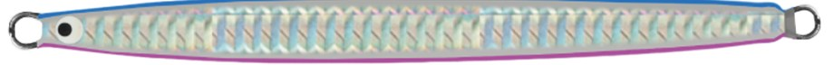
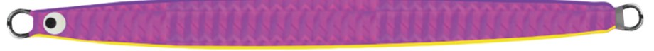
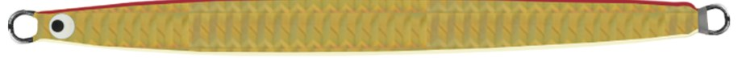
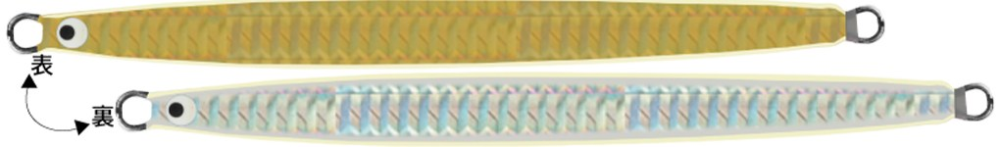

ピーボーイジグ キャスティング ブレードカスタム
（P-BOY JIGキャスティング THEブレードカスタム）
P-BOY JIGキャスティング THEブレードカスタム（ピーボーイブレード）はタックルハウスのブレードジグです。
コンセプトは「ボディ本体が回転する巨大なブレード」。一般的なブレードジグはブレードだけが回りますが、このジグはボディ自体が高速回転し、激しい明滅と小刻みな振動でサワラやサゴシに大きくアピールします。

画像出典:タックルハウス公式HP
スペック
- メーカー
- TACKLE HOUSE（タックルハウス）
- タイプ
- ブレードジグ
- 品番
- PJC50B
- 全長
- 115mm（ジグ本体）
- 重さ
- 50g
- フック
- オーナー プラッガーシングル 2/0
- リング
- #4（計3個）
- スイベル
- キングクレンスイベル#4（ブレード側）／ゲームスイベルBB#1（ライン側）
- ターゲット
- サワラ・サゴシ・青物など
▼今すぐチェック
ピーボーイブレードの特徴
ボディごと回る、ブレードジグの常識から外れた1本
-
ボディ本体が常に高速回転する
ジグ本体を大きなブレードに見立て、終始回転させるセッティング。不規則に回転が混ざるのとは違い、回り続けることで逆に高い直進性と軌道の安定を得ています。シルエットのはっきりしない「キラメキの集合体」のような見え方も狙いです。
-
重さの割に長い115mmの細身ボディ
ジグ部分だけで115mmありますが、横から見たシルエットはかなり細身。フォール時のテーリングがほとんどなく、サワラの歯でリーダーを切られにくいうえ、引き抵抗が少なくリア重心で素早く沈みます。
-
回転を前提にした専用セッティング
小型ブレードとフックは低回転性のクレンスイベルでつなぎ、ブレードの回転をボディに伝える仕組み。ライン側には高回転性のボールベアリングスイベルを標準装備し、糸ヨレを抑えています。小型ブレードはバイトマーカーとしても機能します。
ピーボーイブレードの使い方
サワラやサゴシには、ボトムまで沈めてからの早巻きが基本。瞬間的なストップを混ぜるのも効果的です。
巻き速度を緩めたり、フォールを多用したりすると、ほかの魚種にも効果を発揮します。糸ヨレをさらに防ぎたいときや、ジグの前方へのバイトが多いときは、ボールベアリングスイベルの前側のリングに長めのアシストフックを付けるのがおすすめです。
ピーボーイブレードの得意な状況
ボートやショアからのサワラ・サゴシ狙いのブレードジギング。小型のブレードジグで反応が落ちたときや、リーダーを切られる・フォールでエビるといったストレスを減らしたいときに。
ワンポイント
標準のシングルフックは好みでダブルフックに替えられますが、なるべく同じくらいのサイズを選ぶのがコツ。フックとボディをつなぐスイベルやブレードを交換すると、狙った回転が出なくなる場合があります。
ブレードジグの使い分け
| モデル | 全長／重さ | 特徴 |
|---|---|---|
| ピーボーイブレード | 115mm／50g | ボディごと回転。細長いシルエットで強い明滅を出したいときに |
| レイザー（パームス） | 80mm／80g・85mm／100g | 多面体ボディの反射＋専用ブレード。巻き速度で変化をつけたいときに |
| TGストライク（ブルーブルー） | タングステン | 小さく重いシルエット。小型ベイトや潮の速い場所に |
ピーボーイブレードは「長くても細ければ食う」という考え方のブレードジグ。小さいベイトについたサワラには小型のタングステンジグが定番ですが、反応が落ちたときや、リーダーを切られる日に投入すると、ほかのジグとは違う見せ方ができます。
人気カラー
全6色から4色を紹介します。全色、ケイムラ仕様です（カラー名は公式の表記のまま）。

ブルーピンク青い背中とピンクのベリーの定番カラー。晴れた日の澄み潮で、まず投げたい1色。

ピンクパープルイエローピンクパープルにイエローのライン。回転したときの色の対比が大きく、濁りやローライトに。

レッドゴールドグローゴールドに赤い背中、グローのエッジ。朝マヅメや曇りの日、濁り潮に。

ゴールド＆シルバー/グロー表がゴールド、裏がシルバーで、回転するたびに金と銀が入れ替わるカラー。サイドエッジはグロー。
画像出典:タックルハウス公式HP
ピーボーイブレードに似ているルアー
-
 レイザー
パームス
詳細はこちら＞
レイザー
パームス
詳細はこちら＞
多面体ボディのブレードジグ。80g・100gと重めで、水深のある場所や潮の速いときに。
-
 ドラッグメタル キャスト SSブレード
DUO
詳細はこちら＞
ドラッグメタル キャスト SSブレード
DUO
詳細はこちら＞
ショアからのサワラ狙いの定番ブレードジグ。オカッパリで遠投したいときに。
-
 ブレードショーテル
シャウト
詳細はこちら＞
ブレードショーテル
シャウト
詳細はこちら＞
30〜130gまでそろうブレードジグ。水深や潮に合わせて重さを選びたいときに。